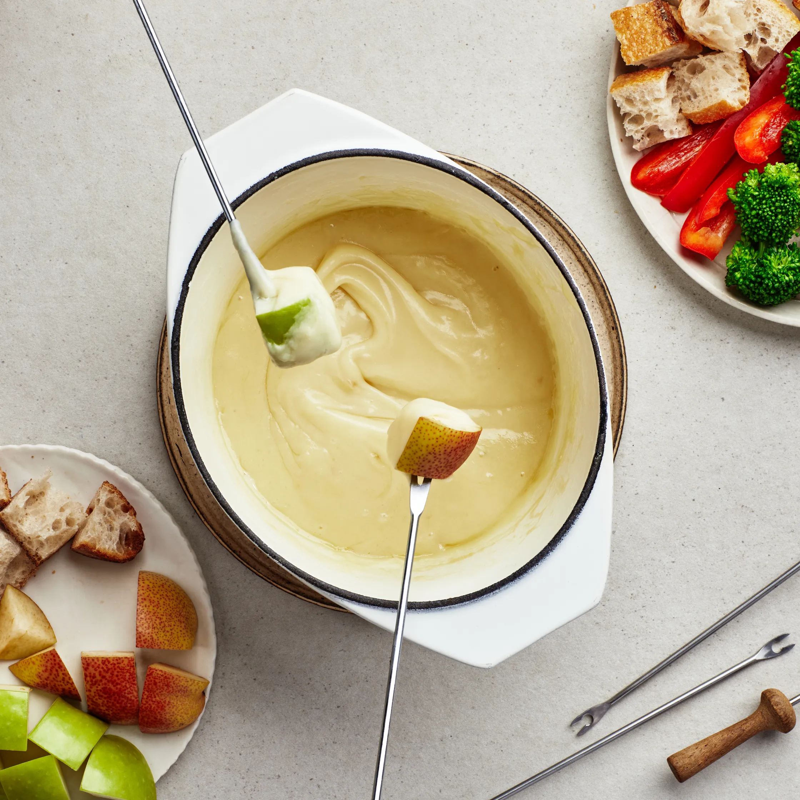

Cheese Fondue
The best cheese for fondue should be low in moisture: Appenzeller, Comté, Beaufort, Tête de Moine, and Hoch Ybrig are all good options. But this classic cheese fondue recipe from Gourmet relies on Emmental and Gruyère, which are widely available yet still traditional. Never let fondue boil, which will cause the cheese proteins to curdle and the oil to separate. Cubes of crusty bread are standard accompaniments for Swiss fondue, but you can also add boiled or roasted potatoes, slices of apples and pears, cured meats, and cornichons to your spread. As an additional treat, when you're almost done eating the fondue, leave a thin coating of cheese on the bottom of the pot. Lower the flame and allow the coating to turn into a brown crust, then break it into pieces and share it with your guests. The crust is considered a delicacy in Switzerland.
Ingredients
- 1 garlic clove, halved crosswise
- 11⁄2 cups dry white wine
- 1 tablespoon cornstarch
- 2 teaspoons kirsch (optional)
- 1⁄2 pounds Emmental cheese, coarsely grated (2 cups)
- 1⁄2 pounds Gruyère, coarsely grated (2 cups)
Recipe Instructions
- Rub inside of a 4-quart heavy pot with cut sides of garlic, then discard garlic. Add wine to pot and bring just to a simmer over moderate heat.
- Stir together cornstarch and kirsch (if using; otherwise, use water or wine) in a cup.
- Gradually add cheese to pot and cook, stirring constantly in a zigzag pattern (not a circular motion) to prevent cheese from balling up, until cheese is just melted and creamy (do not let boil). Stir cornstarch mixture again and stir into fondue. Bring fondue to a simmer and cook, stirring, until thickened, 5 to 8 minutes. Transfer to fondue pot set over a flame.
What to dip:
- Cubes of French bread
- Cubes of apple and pear
- Roasted potatoes
- Julienned raw red bell pepper
- Blanched broccoli florets
What to drink:
- Dry white wine
- German lager or Saison-style ale
- Farmhouse cider
- Fino Sherry
Credit https://www.epicurious.com/recipes/food/views/cheese-fondue-231492
Return to top
Return to main page